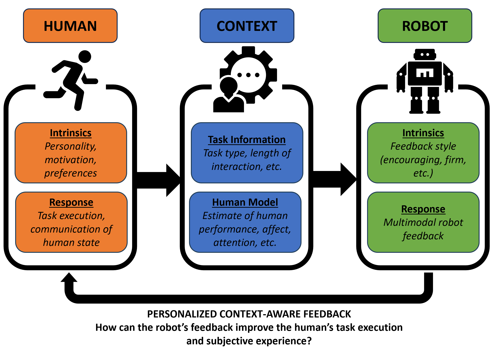
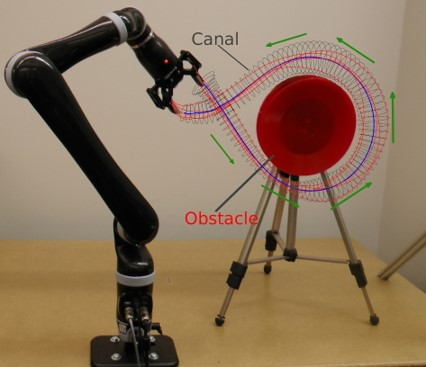

Research
Different people respond to feedback and guidance in different ways. Some might prefer a firmer approach, some might prefer softer. Their preferences may even change depending on their mood, physical health, etc. This project aims to learn people's preferences for both verbal and non-verbal feedback and guidance, by observing their reactions to different types of feedback as they perform various activities in various contexts (e.g., progress in the session, physical and emotional state, etc.). We will use mainly non-verbal cues from people - facial expressions, posture, gestures - to infer their mental state and the AI agent will respond, in kind, with facial expressions, posture, gestures, and verbal feedback and guidance.
This work is being done under Dr. Reid Simmons at Carnegie Mellon University. All work is funded through the AI-CARING project.
Related Publications[Workshop] R. Kaushik and R. Simmons, "Contextual Bandit Approach to Generating Robot Feedback for Human Exercise", HRI 2024
Peer tutoring, in which one student teaches material to another student, has been shown to increase learning. In particular, there can be significant learning gains for the person taking on the role of the teacher if they can engage in reflective knowledge building as they tutor. Unfortunately, it is difficult to find other students who can play this role and it is likely that students would tend not to believe it if adults played the role. We propose that a suitable social robot could believably play the role of ignorant learner, while in reality it would already understand the concept being taught and so could subtly guide the student teacher with its behaviors and modes of interaction (often referred to as “back leading”).
This work is being done under Dr. Reid Simmons at Carnegie Mellon University. See our project website Multi-Modal Communications for Teachable Robots. All work is funded by NSF.
Related Publications[Conference] R. Kaushik and R. Simmons, "Affective Robot Behavior Improves Learning in a Sorting Game", RO-MAN 2022
[Workshop] R. Kaushik and R. Simmons, "Context-dependent Personalized Robot Feedback to Improve Learning", Context-awareness in HRI Workshop (part of HRI 2022)
[Conference] R. Kaushik and R. Simmons, "Perception of Emotion in Torso and Arm Movements on Humanoid Robot Quori", HRI 2021.
[Conference] R. Kaushik and R. Simmons,"Early Prediction of Student Engagement-related Events from Facial and Contextual Features", ICSR 2021.
How should two bodies of different morphology move to imitate one another? While exact replication of activity is not possible, particularly when one system has many fewer degrees-of-freedom than the other, we can define perceptual imitation to be achieved when human viewers see the same activity between the two bodies. Even between humans, our differing mobility and limb lengths create differences in the execution of a task. Yet, even with these differences, we imitate each other in many situations including children learning newmovements from the adults around them, people in exercise classes following the movements of an instructor, or pedestrians taking cues from the people around them on the sidewalk. Moreover, simple cartoon characters and robots are frequently seen as “doing the same thing” as natural counterparts. These examples show that this perceptual imitation is possible and common.
Take a look at this short animation and compare the movement of these two "Broom" robots. The character on the left is mirroring the "verticality" or leaning of the spine of the human motion capture skeleton in the center. The robot on the right is imitating one arm of the human skeleton. My work on this project included understanding how these non-humanoid characters with very low-DOF can perceptually imitate this higher-DOF skeleton, which can have ramifications on understanding the mode of imitation between two highly different moving bodies.
This work was done under Dr. Amy LaViers at the University of Illinois at Urbana-Champaign. All work was funded by DARPA except the MOCO 2020 work sponspered by Siemens.
Related Publications[Conference] R. Kaushik, A. K. Mishra, and A. LaViers, “Feasible Stylized Motion: Robotic Manipulator Imitation of a Human Demonstration with Collision Avoidance and Style Parameters in Increasingly Cluttered Environments,” MOCO 2020.
[Journal] R. Kaushik and A. LaViers, Imitation of Human Motion by Low Degree-of-Freedom Simulated Robots and Human Preference for Mappings Driven by Spinal, Arm, and Leg Activity,, IJSR 2019
[Thesis] R. Kaushik. Developing and evaluating a model for human motion to facilitate low degree-of-freedom robot imitation of human movement. Masters Thesis. 2019.
[Conference] R. Kaushik and A. LaViers, Using verticality to classify motion: analysis of two Indian classical dance styles, presented at the AISB Symposium on “Movement that Shapes Behaviour”, 2019.
[Conference] R. Kaushik and A. LaViers, “Imitating Human Movement Using a Measure of Verticality to Animate Low Degree-of-Freedom Non-humanoid Virtual Characters,” ICSR 2018.
[Conference] R. Kaushik, I. Vidrin, and A. LaViers, “Quantifying Coordination in Human Dyads via a Measure of Verticality,” MOCO 2018.
This work presents a novel geometric framework for intuitively encoding and learning a wide range of trajectory-based skills from human demonstrations. Our approach identifies and extracts the main characteristics of the demonstrated skill, which are spatial correlations across different demonstrations. Using the extracted characteristics, the proposed approach generates a continuous representation of the skill based on the concept of canal surfaces.
This work was done under Dr. Sonia Chernova at Georgia Tech, with funding provided by the SURE Robotics (Research Experience for Undergraduates) Program.
Related Publications[Conference] S. R. Ahmadzadeh, R. Kaushik , and S. Chernova, “Trajectory learning from demonstration with canal surfaces: A parameter-free approach,” Humanoids 2016.